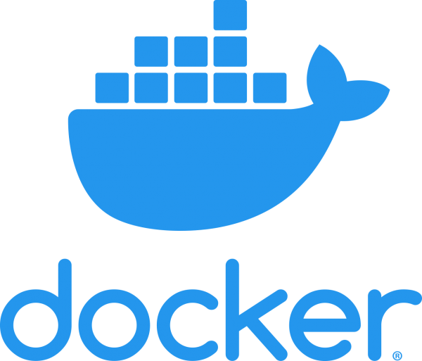

Il Docker è stato creato da Solomon Hykes come un progetto interno di dotCloud (azienda platform as a service) grazie al lavoro di altri ingegneri. Docker rappresenta l'evoluzione della tecnologia proprietaria di dotCloud. dotCloud è stato realizzato grazie a precedenti software open-source come Cloudlets. La sede principale della società Docker si trova a Palo Alto, in California. Il programma è stato pubblicato nel marzo del 2013, anche se la sua base è stata posta anni prima. Nel 2008 in Francia, Solomon Hykes ha iniziato a creare una piattaforma PaaS (pubblica con supporto per diversi linguaggi di programmazione). La startup è iniziata all'interno della sua vecchia società dotCloud. Nel 2013 c'è stata la ridenominazione della piattaforma in Docker, a causa del passaggio alla tecnologia più moderna. Il 13 aprile 2015 era il 20° progetto più seguito su GitHub con più di 20 000 stelle, 4700 fork e 900 contributori. Una ricerca fatta nel maggio del 2015 afferma quali organizzazioni contribuiscono nello sviluppo di Docker e sono in ordine le seguenti: Red Hat, team di Docker, IBM, Google, Cisco Systems e Amadeus IT Group.
Foto di Solomon Hykes
Immagine del nuovo logo Docker
